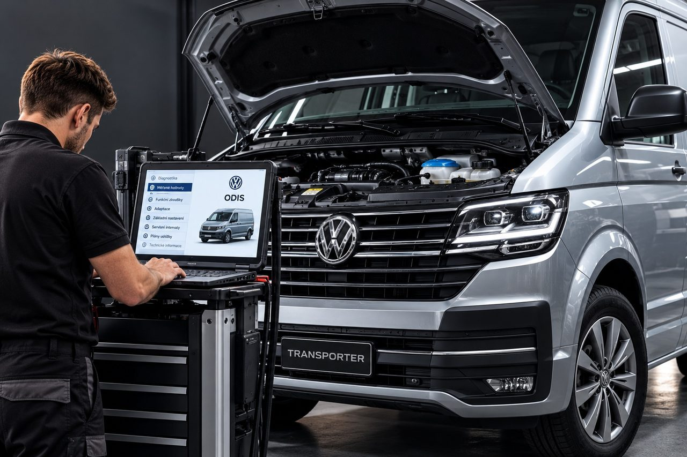

Autoservis

Nezávislý specializovaný autoservis VW Group
J&S SERVIS působí od roku 1994. Ve Statenicích u Prahy se specializujeme na servis, diagnostiku a opravy vozidel Volkswagen, Audi, Škoda, SEAT, CUPRA a Volkswagen Užitkové vozy.
Při diagnostice a opravách využíváme originální systém ODIS Service online, specializované servisní přípravky VAS, odbornou měřicí techniku a technické postupy výrobce pro konkrétní vozidlo.
Naším cílem je přesně určit příčinu závady, navrhnout odpovídající postup opravy a zákazníkovi srozumitelně vysvětlit zjištěný stav vozidla.
Zákazníka informujeme o zjištěném stavu vozidla a případné vícepráce provádíme až po jeho odsouhlasení.
Pravidelné servisní prohlídky
Rozsah prohlídky vychází ze servisního plánu, stáří a počtu najetých kilometrů. Zahrnuje předepsané výměny a kontroly, které pomáhají včas odhalit opotřebení a případné závady. O zjištěných nedostatcích a doporučeném postupu vás informujeme.
Náhradní díly a provozní kapaliny volíme podle požadavků konkrétního vozidla. Provedené práce řádně dokumentujeme a u vozidel s podporovanou elektronickou servisní historií zapisujeme servisní prohlídku do příslušného systému.
Pečujeme také o nové vozy v záruce. Více najdete v sekci Servis nových vozů v záruce (GVO)
Pro objednání nám sdělte VIN, aktuální stav kilometrů a požadovaný servis nebo popis potíží.
Servis podle značky
-

-

-

-

-

Servis CUPRA
Pravidelné servisní prohlídky vozidel CUPRA podle servisního plánu a předpisů výrobce.
-

Servis Volkswagen Užitkové vozy
Caddy, Transporter, Caravelle, Multivan, California a Crafter.
-

Servis nových vozů v záruce (GVO)
I s novým vozem v záruce můžete využít nezávislý autoservis.